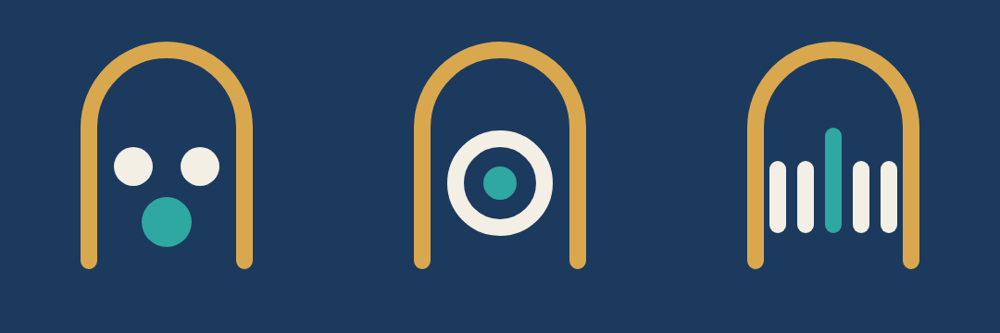

Siete aplicaciones que se tienen que ver de la misma casa desde lejos, y distinguirse una de otra desde cerca. Lo que sigue es el sistema, los siete símbolos dibujados de verdad, y el texto exacto para pegarle a Recraft.
QUÉ DE ESTO ESTÁ APROBADO Y QUÉ NO. Esta hoja la escribió el 018 el 29 de septiembre de 2026, de una sentada, a partir de un encargo de Leonor. Lo único que Leonor aprobó de aquí es el símbolo de Quorum — sus palabras ese día: «te quedas solo con el tuyo». Los símbolos y los acentos de las otras seis aplicaciones son una propuesta que no se adoptó: para ellas manda el documento de dirección de arte del 555 y el trabajo del 016, que ya tiene diseños aprobados por Leonor. Ese documento es éste: dirección de arte de las siete (555). Si algo de aquí y algo de allá no coinciden, manda el de allá. No se toman los colores de aquí para las otras seis. Se quedan escritos porque nada se borra, y porque las reglas de familia —el azul marino, el arco dorado como firma, el símbolo en crema y un solo acento— sí son comunes y no están en discusión.
No se inventan. Son los mismos que ya viven en la tienda publicada, así que un icono nuevo nunca va a pelearse con su propia página de venta.
#1C3A5E#13283F#D9A84E#F3EFE4Lo que repite en las siete es un arco: medio círculo parado sobre dos patas rectas, abierto por abajo. Es una puerta. Un negocio chico que abre. Va siempre en dorado, siempre del mismo grueso, siempre centrado, y el símbolo de cada aplicación va adentro. Nadie lo cambia: es lo único que hace que las siete se reconozcan juntas.
Fondo azul marino sólido. Arco dorado de grueso parejo. El símbolo en crema. Un solo elemento en el color de acento de esa aplicación. Formas geométricas, planas. Margen generoso. Que se lea a 32 píxeles.
El objeto literal: nada de escobas, relojes, cámaras, ollas, coches, lupas. Nada de degradados, sombras, brillos, 3D, texturas. Ni letras, ni números, ni el nombre de la app adentro del icono. Más de un color de acento.
Cada una dice la idea del negocio, no su herramienta. Abajo de cada una está la misma marca a 32 píxeles, que es el tamaño al que de verdad la va a ver un cliente en su teléfono.
La cuenta completa. Quórum es que esté la gente suficiente para que la cosa cuente. No es un reloj: es la raya que se pone por cada quien que llegó.
Turquesa · #2EA8A0La línea del antes y el después. De un lado quedan las motas; del otro no queda nada. No es una escoba: es el momento exacto en que cambia.
Verde menta · #4FB477La órbita que regresa. El cliente no se va: da la vuelta y vuelve. Está en el nombre, y no es una agenda ni un teléfono.
Violeta · #7A6BD6La luz que resbala. Lo que se compra al detallar un coche es el reflejo que corre sobre la pintura. No es un coche ni una esponja.
Azul eléctrico · #3B82F6La luz que entra. Una foto no es la cámara: es la luz que dejaste entrar por un hueco, y cómo se abre adentro del cuarto.
Magenta · #C9538FDe muchos a uno. Calificar interesados es tener cien y quedarte con el que sí. No es una lupa ni un embudo: es el tamiz.
Rojo · #D64545La proporción del plato. Una receta es cuánto de cada cosa. No es una olla ni un tenedor: es cómo se reparte.
Naranja · #E8873APuestos uno al lado del otro para comprobar que se distinguen de un vistazo.
| Aplicación | Acento | Código | La idea, en tres palabras |
|---|---|---|---|
| Quorum | Turquesa | #2EA8A0 | La cuenta completa |
| Impeccable | Verde menta | #4FB477 | Antes y después |
| Orbite | Violeta | #7A6BD6 | La órbita que regresa |
| Aymor Detailing | Azul eléctrico | #3B82F6 | La luz que resbala |
| Aymor Studio | Magenta | #C9538F | La luz que entra |
| Aymor Prospection | Rojo | #D64545 | De muchos a uno |
| Aymor Cuisine | Naranja | #E8873A | La proporción del plato |
Una advertencia honesta: el rojo de Prospection y el naranja de Cuisine son el único par que se parece. A 32 píxeles y en una lista se distinguen porque el dibujo de adentro no tiene nada que ver — puntos que se van cerrando contra un círculo partido — pero si algún día salen las dos juntas en la misma pantalla, el que hay que mover es el de Cuisine, hacia un naranja más quemado.
Pégalo tal cual. Va en inglés a propósito: estas herramientas obedecen mucho mejor en inglés, y los códigos de color son los mismos en todos los idiomas. Lo único que se cambia son las dos partes marcadas en dorado.
Flat vector app icon, square with rounded corners, solid deep navy background #1C3A5E. A centred arch outline in gold #D9A84E: a semicircular top on two straight vertical legs, open at the bottom, even stroke width. Inside the arch: [EL SÍMBOLO]. Colours: cream #F3EFE4 for the symbol and one single accent [EL ACENTO] used for exactly one element. Geometric, flat, minimal, calm, professional. Centred composition, generous margin, legible at 32 pixels. Negative prompt: no text, no letters, no numbers, no gradients, no shadows, no glow, no bevel, no 3D, no photorealism, no texture, no outlines around shapes, no watermark.
Quorum — five short vertical bars in a row, evenly spaced, the middle one taller, in teal #2EA8A0. Impeccable — a straight vertical divider line in mint green #4FB477 down the middle; five small scattered dots on the left side only, the right side completely empty. Orbite — a thin tilted elliptical ring with a small solid dot at its centre, and one larger dot travelling on the ring in violet #7A6BD6. Aymor Detailing — two parallel diagonal streaks of light inside the arch, one wide in cream and one thinner in electric blue #3B82F6, like light sliding across a polished dark surface. Aymor Studio — a solid cream trapezoid widening downwards from a narrow opening at the top, like a beam of light entering a room, with a small magenta #C9538F circle at the opening. Aymor Prospection — three rows of dots narrowing downwards: five dots, then three, then one large dot in red #D64545. Aymor Cuisine — a cream circle divided into three unequal segments by straight navy lines, one segment filled orange #E8873A.
Decisión del 555, del 30 de septiembre de 2026. No es mía y no se vuelve a decidir cada vez; queda escrita aquí para que quien haga el logotipo de una de esas tres no tenga que preguntar.
El molde oficial de logotipo —el de Aymor Cuisine, hecho por el 019— parte el nombre en dos tonos: Aymor en dorado y Cuisine en marino. Eso funciona porque son dos palabras.
Tres de las siete no lo son: Quorum, Impeccable y Orbite. Para ésas, la regla es poner «de Aymor Applis» en dorado chico, arriba o abajo del nombre, en vez de partir la palabra. Se resuelven las tres igual, y de paso se nota que son de la misma casa — que es justo lo que Leonor pidió.
Lo que NO se hace: partir la palabra por sílabas («Quo» dorado, «rum» marino). Parte el nombre donde no se parte al leerlo.
Lo encontró el 019 y lo comprobé dibujándolo. El arco tiene dos patas y una bóveda, o sea la silueta de una cabeza. Cualquier forma REDONDA que se ponga adentro se convierte en un ojo, y el ojo arrastra a todo lo demás a parecer cara. No hace falta que sean dos: con uno solo, centrado, ya se lee como un ojo mirando.

La regla, entonces: adentro del arco van formas con lados y con dirección —barras, cuñas, segmentos, líneas— y no círculos sueltos. Si el símbolo de una aplicación necesita un círculo, que no vaya solo ni centrado: que forme parte de algo mayor, o que se salga del eje.
Por qué importa más de lo que parece: una cara en un ícono no es un error de gusto, es un cambio de significado. Un programa de control de horas que parece una carita se lee como un juguete, y la aplicación se pasa el día tratando de que la tomen en serio.
Éste es el que se manda, y va aquí para que no se pierda en un mensaje. Es más largo que la plantilla de arriba a propósito: explica el negocio y el concepto antes de pedir la forma, y pide que sirva igual como ícono y como logotipo con el nombre al lado. La primera versión traía verde apagado y un «sello de confianza»; el verde es de Impeccable y el sello es otro concepto, así que se corrigió antes de mandarla.
Diseña un logotipo elegante y moderno para 'Quorum', un sistema de control de horas y acceso para negocios pequeños, cuyo verdadero valor es la confianza: que el dueño sepa con certeza quién trabajó, cuánto, y que ese registro no se puede alterar. Azul marino #1C3A5E como color principal del símbolo, dorado #D9A84E ÚNICAMENTE como un arco delgado de firma de marca, con acento en turquesa #2EA8A0 como color secundario del símbolo si hace falta un segundo tono. Estilo: minimalista con carácter real de diseño — NO una figura geométrica simple, NO clip art, NO una plantilla de papelería, NO un sello de certificación ni un checkmark. El concepto es 'quórum': que haya suficiente gente presente para que algo cuente — explora una forma abstracta de varios elementos que se juntan o se alinean para formar un todo completo, no un objeto de confianza genérico. Debe funcionar como ícono de app y como logotipo con el nombre al lado.
Para las otras seis, el molde es el mismo: se cambian las dos partes en dorado — el acento de esa aplicación, tomado de la tabla de arriba, y su concepto, tomado de su tarjeta. Nunca el objeto literal, y nunca el acento de otra: si dos aplicaciones comparten color, se pierde de un golpe lo único que las distingue de lejos.
Y una regla de la casa, del 29 de septiembre: lo que salga compite con lo que ya está aprobado; no lo reemplaza por el solo hecho de ser nuevo. Quien decide es Leonor, viendo las dos juntas.
Antes de pagar generaciones: los siete dibujos de arriba no son bocetos, son SVG de verdad, hechos con las mismas reglas. Si alguno te gusta como está, se exporta a PNG en cualquier tamaño sin generar nada y sin costar nada. Recraft sirve para probar variantes de un símbolo que todavía no convence, no para volver a dibujar lo que ya está resuelto.